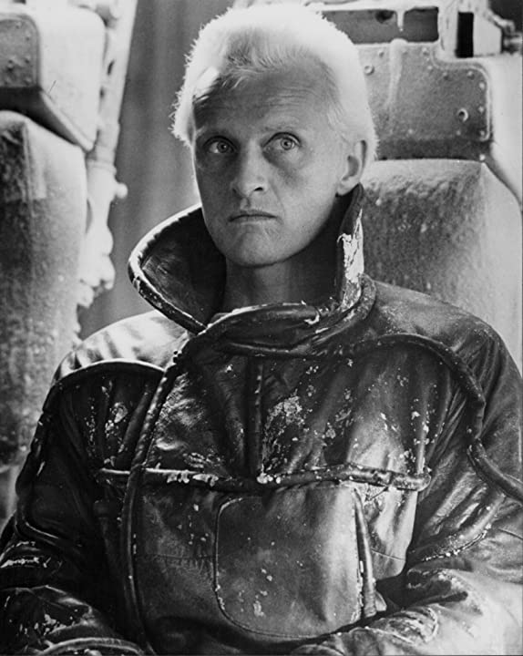

Blade Runner
1982
In the early twenty-first century, the Tyrell Corporation, during what was called the Nexus phase, developed robots, called "replicants", that were supposed to aid society, the replicants which looked and acted like humans. When the superhuman generation Nexus 6 replicants, used for dangerous off-Earth endeavors, began a mutiny on an off-Earth colony, replicants became illegal on Earth. Police units, called "blade runners", have the job of destroying - or in their parlance "retiring" - any replicant that makes its way back to or created on Earth, with anyone convicted of aiding or assisting a replicant being sentenced to death. It's now November, 2019 in Los Angeles, California. Rick Deckard, a former blade runner, is called out of retirement when four known replicants, most combat models, have made their way back to Earth, with their leader being Roy Batty. One, Leon Kowalski, tried to infiltrate his way into the Tyrell Corporation as an employee, but has since been able to escape. Beyond following Leon's trail in hopes of finding and retiring them all, Deckard believes part of what will help him is figuring out what the replicants wanted with the Tyrell Corporation in trying to infiltrate it. The answer may lie with Tyrell's fail-safe backup mechanism. Beyond tracking the four, Deckard faces a possible dilemma in encountering a fifth replicant: Rachael, who works as Tyrell's assistant. The issue is that Dr. Elden Tyrell is experimenting with her, to provide her with fake memories so as to be able to better control her. With those memories, Rachael has no idea that she is not human. The problem is not only Rachael's assistance to Deckard, but that he is beginning to develop feelings for her.

In the early twenty-first century, the Tyrell Corporation, during what was called the Nexus phase, developed robots, called "replicants", that were supposed to aid society, the replicants which looked and acted like humans. When the superhuman generation Nexus 6 replicants, used for dangerous off-Earth endeavors, began a mutiny on an off-Earth colony, replicants became illegal on Earth. Police units, called "blade runners", have the job of destroying - or in their parlance "retiring" - any replicant that makes its way back to or created on Earth, with anyone convicted of aiding or assisting a replicant being sentenced to death. It's now November, 2019 in Los Angeles, California. Rick Deckard, a former blade runner, is called out of retirement when four known replicants, most combat models, have made their way back to Earth, with their leader being Roy Batty. One, Leon Kowalski, tried to infiltrate his way into the Tyrell Corporation as an employee, but has since been able to escape.
Beyond following Leon's trail in hopes of finding and retiring them all, Deckard believes part of what will help him is figuring out what the replicants wanted with the Tyrell Corporation in trying to infiltrate it. The answer may lie with Tyrell's fail-safe backup mechanism. Beyond tracking the four, Deckard faces a possible dilemma in encountering a fifth replicant: Rachael, who works as Tyrell's assistant. The issue is that Dr. Elden Tyrell is experimenting with her, to provide her with fake memories so as to be able to better control her. With those memories, Rachael has no idea that she is not human. The problem is not only Rachael's assistance to Deckard, but that he is beginning to develop feelings for her.
Rutger Hauer is amazing in this movie